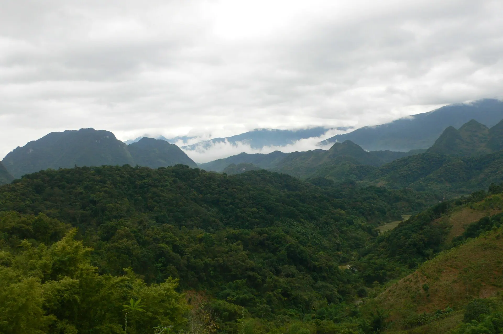

Co Lung 鸭
肉质紧实的走地鸭，水煮或配 mắc khén 烤。
示意图: 烤鸭
普隆自然保护区有原始森林、壮阔的梯田，以及保留传统高脚屋的泰族、芒族村寨。非常适合徒步、在稻田间住民宿，在竹水车吱呀声中入眠。
正在加载天气...
点击月份查看是否适合出行
Flooded terraces mirror the sky as planting begins.
Go early morning or late afternoon for the best light.
Terraces turn gold – best from late September to early October.
Weekends are crowded and homestays fill up fast.
农历节日每年日期不同——出发前请确认官方日期。
肉质紧实的走地鸭，水煮或配 mắc khén 烤。
示意图: 烤鸭竹筒烤糯米饭，配芝麻盐。
柴火烤得酥脆的小溪鱼。
示意图: 烤鱼苦笋和林中竹笋加蒜炒。
示意图: 野竹笋Co Lung duck, bamboo rice, wild greens
Bản Đôn, xã Thành Lâm, Bá Thước 更新于 2026/09 报错Grilled stream fish, bitter bamboo shoots
Phố Đoàn, xã Lũng Niêm, Bá Thước 更新于 2026/09 报错Sticky rice, black banh chung, rice wine
Chợ Phố Đoàn, Bá Thước 更新于 2026/09 报错Co Lung duck boiled or grilled with mac khen
Thị trấn Cành Nàng, Bá Thước 更新于 2026/09 报错Pho or rice rolls for breakfast
Thị trấn Cành Nàng, Bá Thước 更新于 2026/09 报错Thai family meal: sticky rice, stream fish
Bản Hiêu, Cổ Lũng 更新于 2026/09 报错Chicken hotpot with bamboo shoots
Bản Kho Mường 更新于 2026/09 报错Grilled or fried Ma river fish
Ven sông Mã, Bá Thước 更新于 2026/09 报错每人参考价格。点击地址可在 Google 地图查看营业时间和最新评价。
穿过梯田、竹林和 Bang 洞。
林中有清澈水潭的多级瀑布。
Pho Doan 和 Hieu 村的巨型竹水车。
溪水声中与泰族房东共进晚餐。
根据此目的地和月份推荐（在行程部分选择出发日期可更改月份）。勾选已打包的物品方便记忆。
发现价格、开放时间变了或店铺已关门？ 报错
250k–700k / 晚
Stilt houses among terraces, near the water wheels.
1.2M–3M / 晚
Infinity pools over the paddies – book early at harvest.
300k–600k / 晚
Simple guesthouses near the bus station.
From Hanoi ~4 h (170 km) via Mai Chau: bus to Ba Thuoc and a homestay pick-up, or a private car/limousine.
| 从河内出发 |
|
|---|---|
| 从岘港出发 |
|
| 从胡志明市出发 |
|
预计行程时间，每人单程经济票价——仅供参考。加粗的是推荐方式。
两人一晚参考房价，春节、假日和周末更贵。Việt Travel 不从预订网站收取佣金。
Việt Travel · 清化 · 最佳时间: 5 月 – 6 月，9 月 – 10 月
Drive ~4 h from Hanoi via Mai Chau to Pu Luong and check into a homestay.
Walk the Don village terraces and watch the water wheels turn.
Co Lung duck and bamboo rice in a stilt house.
夜间散步片刻，然后回去休息
Trek through bamboo forest to the Thai village of Kho Muong.
Explore Bang cave and swim in a clear stream.
Water wheels creaking and stars over the valley.
夜间散步片刻，然后回去休息
如果早出发，可以带上法棍面包或糯米饭
Cycle to the multi-tiered Hieu waterfall for a swim.
Visit Hieu village and its weavers; Pho Doan market on Saturdays.
Rice wine through bamboo straws and bamboo dancing.
夜间散步片刻，然后回去休息
行程结束：退房，购买当地特产后返程。
在住处吃早餐（常含在房费中）
Bamboo rafting on the Ma river between cliffs.
Relax at a homestay pool overlooking the paddies.
BBQ hill chicken and stream fish.
夜间散步片刻，然后回去休息
行程结束：退房，购买当地特产后返程。
在住处附近当地人多的小店吃早餐
Lunch and brocade shopping in Mai Chau.
Return to Hanoi.
行程结束：退房，购买当地特产后返程。
明细：预算
明细：舒适
明细：预算
明细：舒适
明细：预算
明细：舒适
不含前往普隆的机票/交通。参考价格，随季节变动。
想去多个地方？把普隆和其他目的地组合起来吧。
分享你的经历
读者照片
还没有照片——来第一个分享你在普隆的瞬间吧！
分享你的照片